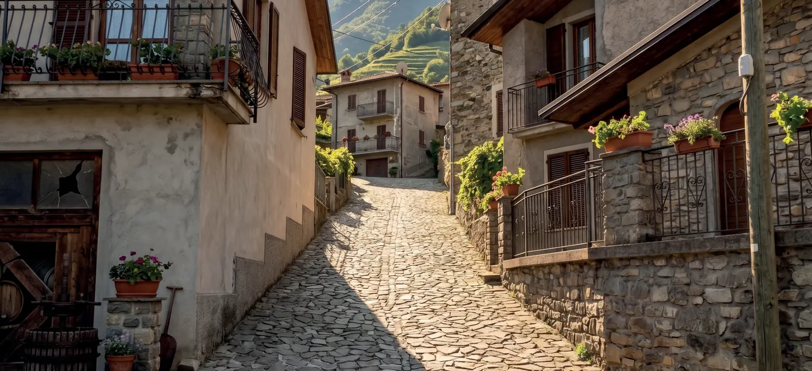
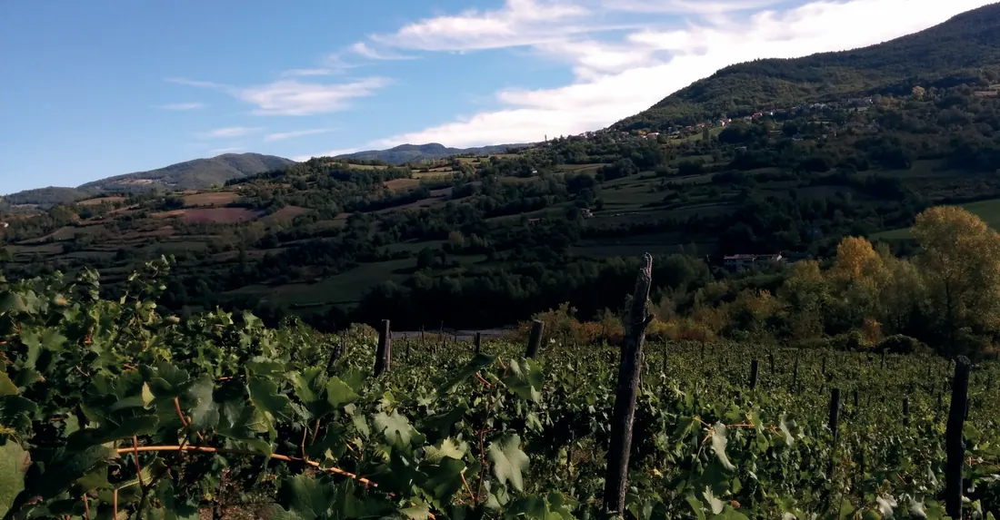
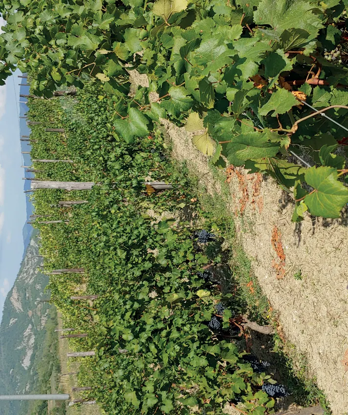
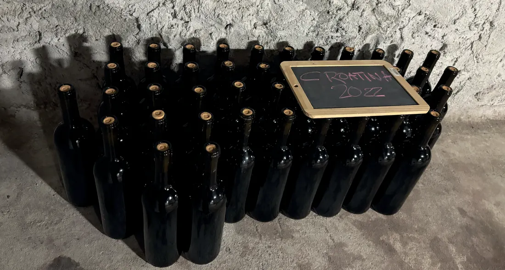

Origine
01 / homeSanta Margherita di Staffora550—650 m s.l.m.
Stra
Crösa
Il vino nato da una strada.
Alta collina, gesto manuale, fermentazioni spontanee. Un vino essenziale, naturale, non convenzionale.

La Stra Crösa · strada e borgoNon è solo una via fisica. È il legame tra la valle, il borgo e la cantina.
StraCrösa nasce dal dialetto locale: così gli abitanti hanno sempre chiamato la strada che conduce al borgo storico di Casanova Staffora.
Il nome diventa una scelta di metodo: seguire un percorso non convenzionale, manuale, radicale. Dalla terra alla cantina, fino alla bottiglia.

MoiasseAlta collina
Vigneti tra 550 e 650 metri: freschezza, aromi e una nicchia produttiva distinta nel paesaggio dell’Oltrepò.
Firagni
Pinot Nero e Nebbiolo sui versanti alti. L’identità del vino nasce prima di tutto dal luogo.

Firagni · crop landscapeI vini di StraCrösa
Il prodotto prima della firma.
La gerarchia è chiara: vitigno, territorio, annata. StraCrösa resta una firma sobria, non un ornamento.

Produzione limitataMetodo
Nessun diserbo chimico o fitofarmaco di sintesi. Fermentazioni spontanee con lieviti autoctoni. Assenza di solfitazione o filtrazioni.
Una comunicazione bianca e nera, netta, lascia emergere il vino senza effetti decorativi.